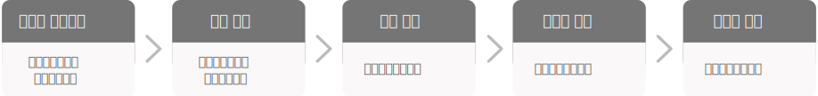
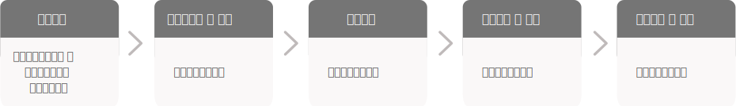
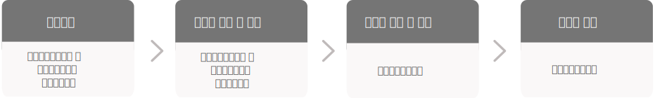
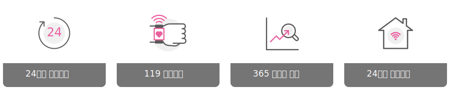

{kind=link}
사업안내
운영안내
운영시간 : 주중(월~금) 09:00 ~ 18:00 / 공휴일 제외 (이용문의 : 064-751-5150)
■사업 대상자
- 희망하는 입주 신청일 기준 만 19세 이상, 만 55세 이하인 자에 해당하는 정책대상자
■사업 내용
- - 자립생활주택 등에서 적응 또는 독립생활이 가능한 재가장애인들에게 독립적인 주거공간 제공
- - 장애인 당사자에 맞춘 편의시설 제공 등 주거환경 개조 지원
- - 일상생활, 지역사회 이용 등 자립에 필요한 돌봄서비스 제공
■지원주택
 지원주택이란?
지원주택이란?
지원주택은 지역사회 주거생활이 취약한 사람들에게 안정적인 주거생활이 가능하도록 주택을 제공하면서
여기에 필요한 서비스를 연결하는 것을 의미
- ▶ 입주조건
- - 생활비 부담이 가능하고 지원주택에서 제공하는 자립생활지원서비스를 통해 자립생활이 가능한 자
- - 일상생활능력이 있거나 서비스 지원을 받으면 일상생활에 큰 지장이 없는 자
- - 공동생활(2인)에 있어 결격사유가 없는 자
- ▶ 이용절차
- 
- ▶ 서비스 지원체계 : 행복매니저의 개인별 주거지원계획 및 관리에 따른 주거코치 배정으로 맞춤형 주거지원 서비스 제공
- ▶ 주거지원서비스
- - 주거지원서비스 : 주택알선 및 계약, 임대주택 신청, 주거관리 및 유지, 이사 지원
- - 일상생활 : 자기관리, 가사관리, 건강관리, 금전관리, 개인안전, 비상대응 계획
- - 사회참여 : 쇼핑, 교통수단, 여가활동, 지역사회활동 관계
- - 옹호 : 법률지원 연계, 공공후견인 신청, 발달장애인 신탁 연계, 권리 보호
■사업 대상자
- 제주시에 거주하는 발달(지적,자폐성)장애인 및 뇌병변장애인
· 1순위 : 생활시설 입소대기자 및 생활시설 퇴소 희망자 / · 2순위 : 그 외 발달 및 뇌병변 장애인
■사업 내용
- - 민원업무, 병원 이용 등 이동이 필요한 장애인에게 이동지원 서비스 제공
- - 필요시 보호자 탑승가능하며, 예약제로 운행
■사업 안내
- ▶ 신청접수 : 읍면동 주민센터 맞춤형 복지팀 및 제주시장애인지역사회통합돌봄지원센터
- ▶ 이용절차
-
-

- ▶ 준수사항
- - 예약전화를 통해 이용 신청해 주세요.
- - 특정 차량 또는 운전원을 지정할 수 없습니다.
- - 출발지·목적지 변경 및 예약을 취소할 경우에는 최소 1시간 전까지 연락 바랍니다.
- - 운전원에게 안전운행에 방해되는 신체적 접촉이나 폭언은 삼가해 주세요.
- - 안전운행에 필요한 경우 보호자가 동승할 수 있습니다.
- - 준수사항을 이행하지 않을 시 이용이 제한될 수 있습니다.
※ 기타 문의사항 또는 민원 발생 시 제주시장애인지역사회통합돌봄지원센터 (T.064-751-5150)로 연락 바랍니다.
■사업 대상자
- 정책대상자 중 자립지원계획 수립 및 서비스 연계가 필요한 자
■사업 내용
- - 지원주택 대상자에게 지역사회 내 교육, 활동, 건강 등 일상생활에 필요한 다양한 프로그램 연계 및 지원
- - 정책대상자에 대한 사례관리 및 서비스 연계 지원
■운영 인력
- - 행복플래너 : 정책대상자에 대한 사례관리 및 서비스 연계
- - 행복코치 : 지원주택 거주자에게 일상생활 지원
■이용 절차
-

■사업 대상자
- 제주시에 거주하는 발달(지적,자폐성)장애인 및 뇌병변장애인
· 1순위 : 생활시설 입소대기자 및 생활시설 퇴소 희망자 / · 2순위 : 그 외 발달 및 뇌병변 장애인
■사업 내용
- - 응급안전시스템 모니터링 인력 구성
- - 사물인터넷, 스마트홈 등 안전시스템 설치
■응급안전시스템(스마트홈케어서비스)
스마트홈케어 서비스란?
장애인 가정에 활동량감지기, 응급호출기, 스마트 전등, 가스차단기 등을 설치하여 응급상황 발생시 보호자 및 응급안전요원에게 연락해 후속 조치를 제공하는 서비스입니다.
- ▶ 지원대상 : 제주시에 주소를 둔 발달장애인(지적·자폐성)장애인, 뇌병변장애인 200가구
- ▶ 신청 및 접수 방법 : 주민등록상 주소지 주민센터 통합돌봄 창구 방문 신청
- - 신청서류 : 제주시 장애인 지역사회 통합돌봄 신청서 1부 / 개인정보 수집·이용 제공동의서 1부
- - 문의처 : 읍·면·동 주민센터 통합돌봄 창구(064-728-3041 ~ 3043) / 제주시장애인지역사회통합돌봄지원센터 (064-751-5150)
- ▶ 주요서비스
- 
- ▶ 지원장비

■사업 대상자
- 제주시에 거주하는 발달(지적,자폐성)장애인 및 뇌병변장애인
· 1순위 : 생활시설 입소대기자 및 생활시설 퇴소 희망자 / · 2순위 : 그 외 발달 및 뇌병변 장애인
■사업 내용
- - 부부상담, 가족 집단상담, 가족놀이 치료 등 정책대상 장애인 및 가족에 대한 가족 기능강화 프로그램 제공
■가족기능강화 프로그램
가족기능강화 프로그램이란?
장애인 가족의 갈등 해소 도움 및 정서적 안정과 바람직한 가족 기능을 강화시켜 건전하고 적극적인 사회활동 참여 및
가족의 삶의 질 향상 지원
- ▶ 신청기간 : 수시
- ▶ 신청 및 접수 : 제주시장애인지역사회통합돌봄지원센터(T.064-751-5150)
■사업 대상자
- 제주시에 거주하는 발달(지적,자폐성)장애인 및 뇌병변장애인
· 1순위 : 생활시설 입소대기자 및 생활시설 퇴소 희망자 / · 2순위 : 그 외 발달 및 뇌병변 장애인
■사업 내용
- - 장애인 1:1 상담, 소통향상 집단상담, 집단 인형치료, 집단 원예치료, 자립생활 프로그램 등 상담 및 정서지원 프로그램 제공
■상담 및 정서지원 프로그램
상담 및 정서지원 프로그램이란?
정책대상 장애인들에게 지속적인 정서지원을 통해 지역사회 적응 및 자립생활에 필요한 서비스 지원
- ▶ 신청기간 : 수시
- ▶ 신청 및 접수 : 제주시장애인지역사회통합돌봄지원센터(T.064-751-5150)
■사업 대상자
- 지역사회
■사업 내용
- - 체계적인 센터 운영을 위하여 각계 전문가들과 협약하는 업무협약 진행
- - 지역사회 내 유관단체와의 연대·협력을 통한 자원연계 및 인프라 구축